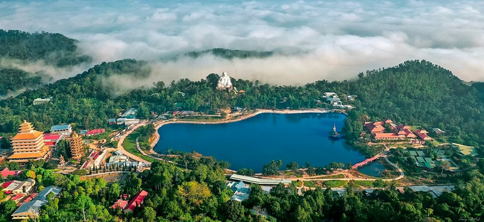
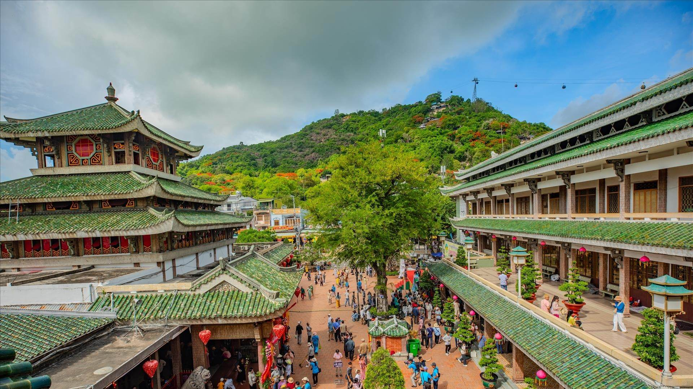

Du Lịch An Giang
Vùng đất tâm linh và sông nước miền Tây
Giới thiệu
An Giang là tỉnh thuộc miền Tây Nam Bộ, nổi tiếng với cảnh đẹp thiên nhiên, văn hóa tâm linh và ẩm thực đặc trưng vùng sông nước.
Địa điểm nổi bật
Núi Cấm
Ngọn núi cao nhất miền Tây, khí hậu mát mẻ quanh năm.

Rừng Tràm Trà Sư
Khu rừng ngập nước nổi tiếng với hệ sinh thái đa dạng.

Miếu Bà Chúa Xứ
Địa điểm du lịch tâm linh nổi tiếng thu hút hàng triệu du khách.
📍 Liên hệ: chuvoicon@gmail.com
© 2026 Du lịch An Giang